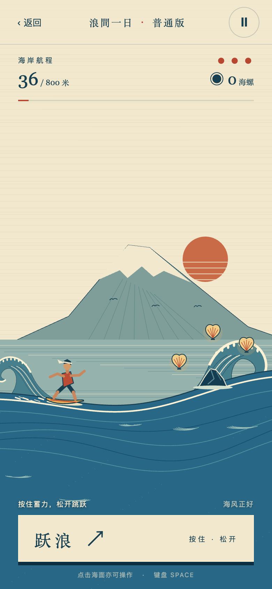
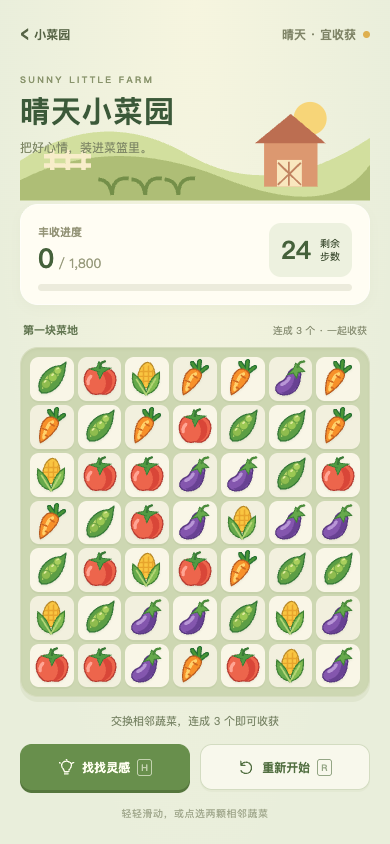
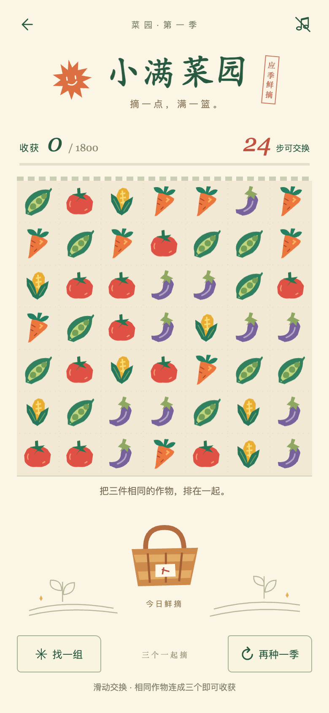

不用 Skill · 浪间一日
独立绘制的远山与蓝浪，
蓄力跃浪，沿途收集海螺。

试玩普通版 →手机竖屏 · 独立制作的普通版与 Skill 打磨版 · 点击画面即可试玩
按住蓄力，松开起跃。在 800 米浪道上拾取海螺，越过礁石与漂木。
独立绘制的远山与蓝浪，
蓄力跃浪，沿途收集海螺。

试玩普通版 →原创版画海景，
屈膝压板、腾空与落浪。
 试玩Skill 版 →
试玩Skill 版 →轻扫或点选相邻作物，连成三个收获；24 步内达到 1,800 分。
清晰的农场棋盘与原创蔬菜图形，
完整交换、连锁和胜负流程。

试玩普通版 →切形蔬菜与轻快的采摘，
每一组收获，都会落进篮子。

试玩Skill 版 →